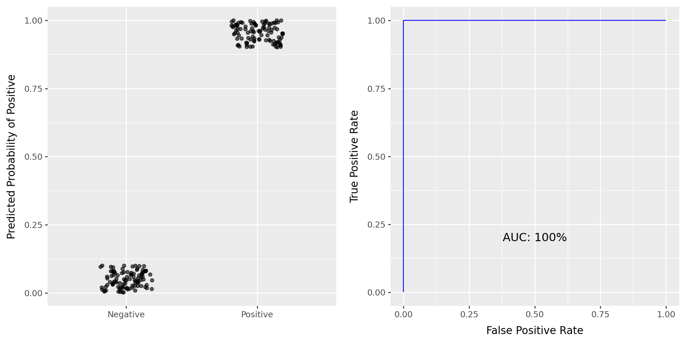
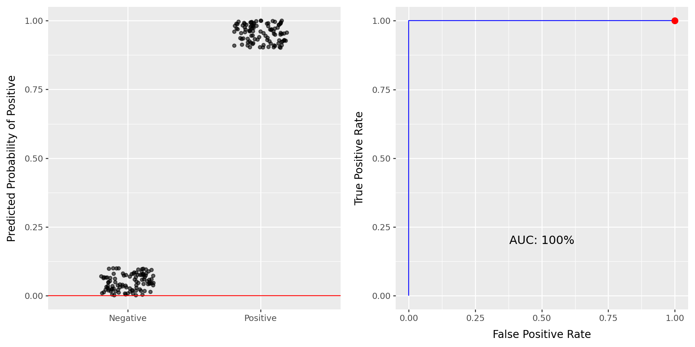
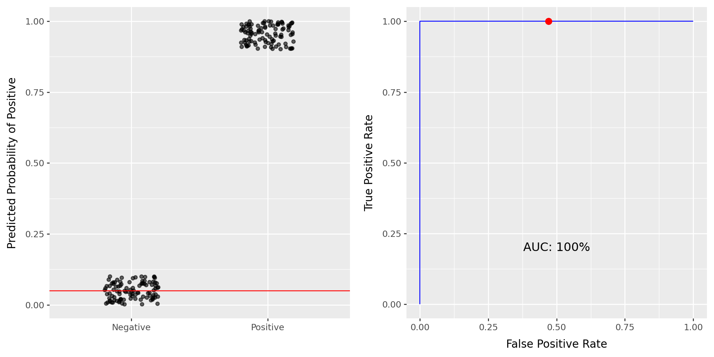
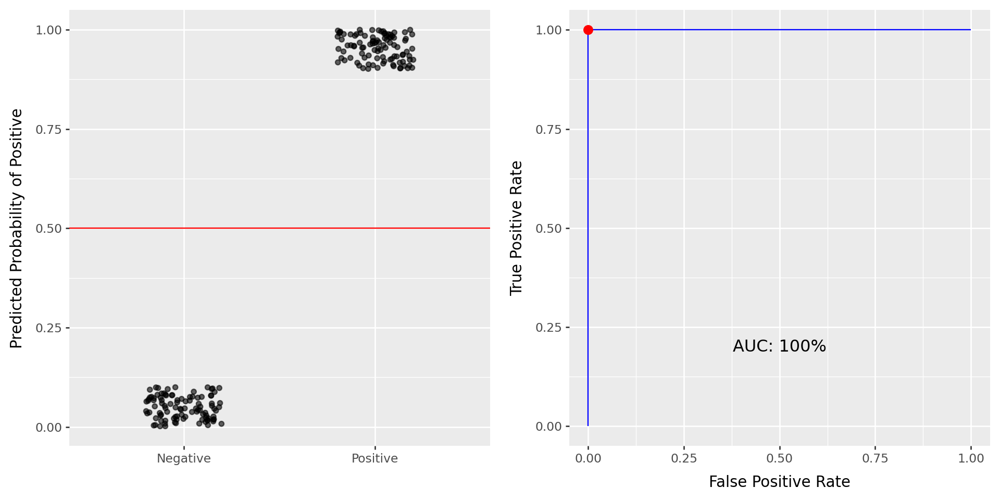
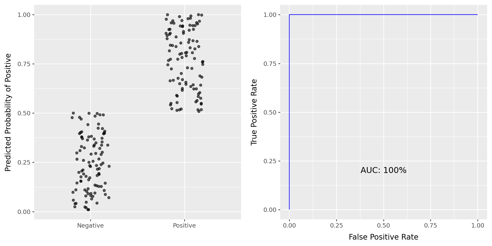
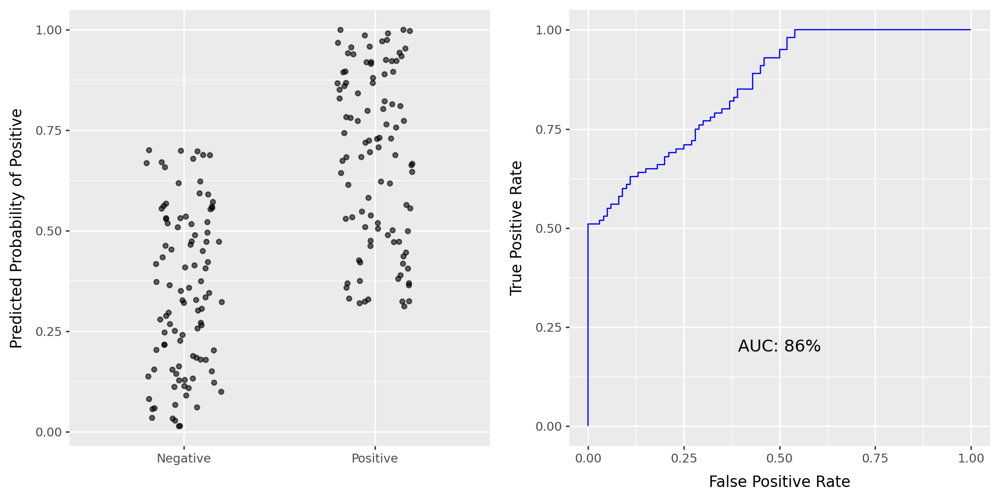
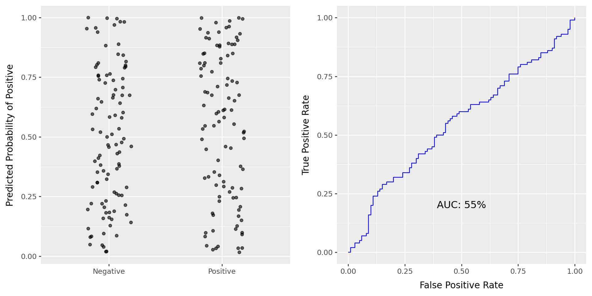
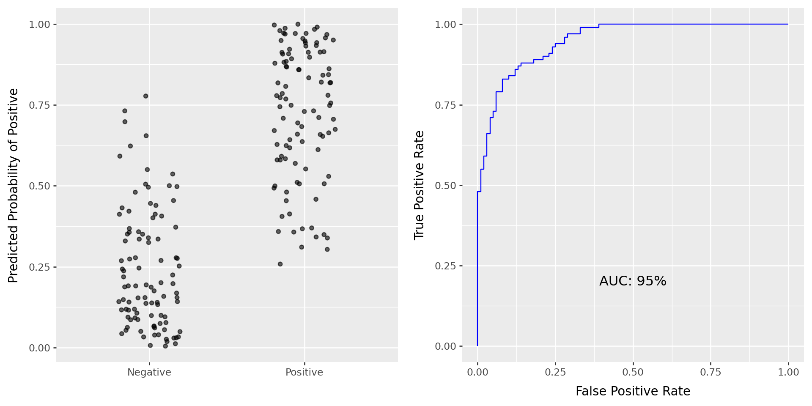
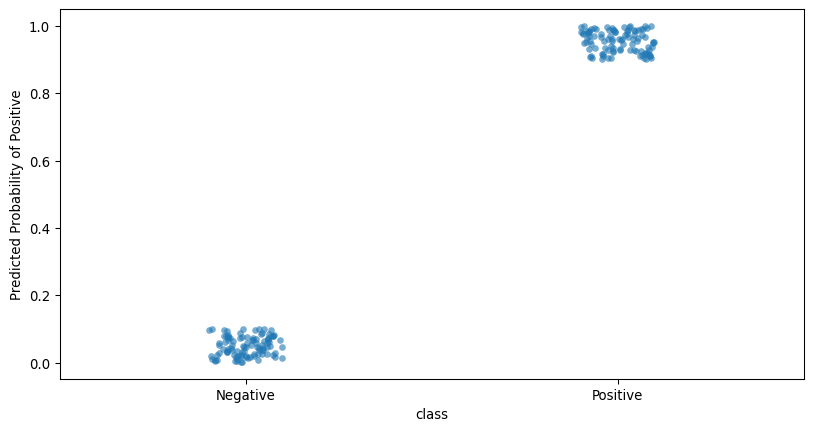

MATH 4025: ROC and AUC
Dr. Eric Friedlander
Concept Check
Try to do the following on your own:
- Load the
Defaultdataset from the last two lectures. - Split the dataset into a training and test set using a 60-40 split.
- Fit a Logistic Regression classifier with
defaultas your target variable andbalanceas your only predictor. - Generate probability of default for all observations in your test set.
Binary Classifiers
- Start with binary classification scenarios
- With binary classification, designate one category as “Success/Positive” and the other as “Failure/Negative”
- If relevant to your problem: “Positive” should be the thing you’re trying to predict/care more about
- Note: “Positive” \(\neq\) “Good”
- For
default: “Yes” is Positive
- Some metrics weight “Positives” more and vice versa
Last Time
- Confusion Matrix
- Metrics based on confusion matrix
- Accuracy
- Recall/Sensitivity
- Precision/PPV
- Specificity
- NPV
- MCC
- F-Measure
- Today: ROC and AUC
Thresholding
What is a threshold?
- In reality, model is predicting probabilities
- We need to convert these probabilities into class labels (default is 0.5)
- We do this by setting a threshold
- Idea: if probability is above threshold, predict positive, otherwise predict negative
Why use a threshold other than 0.5?
- Costs of different types of errors are not equal
- Example: False Negative (missing a disease) is worse than False Positive (extra test)
- Class imbalance
- If one class is much rarer, the model might always predict the majority class at 0.5
- Specific performance requirements
- Need for high sensitivity (don’t miss any positives)
- Need for high specificity (don’t have any false alarms)
Using a threshold
- Step 1: Predict probabilities for all observations
- Step 2: Set a threshold to obtain class labels (0.5 below) (use
FixedThresholdClassifierinsklearn.model_selection) - Step 3: Compute metrics based on confusion matrix
Practice
Let’s do this with our Logistic Regression model.
- If I want to improve Recall/Sensitivity should I increase or decrease my threshold?
- If I want to improve my Precision/PPV should I increase or decrease my threshold?
ROC Curve
ROC Curve and AUC
- ROC (Receiver Operating Characteristics) curve: popular graphic for comparing different classifiers across all possible thresholds
- Plots the (1-Specificity) along the x-axis and the Sensitivity (true positive rate) along the y-axis
- AUC: area under the ROC curve
- Ideal ROC curve will hug the top left corner
- Idea: How well is my classifier separating positives from negatives
ROC Curve in Python
- Use
roc_curvefromsklearn.metricsto get the false positive rates and true positive rates - Use
RocCurveDisplayfromsklearn.metricsto plot the ROC curve
AUC
- AUC: Area under the curve (ROC Curve that is)
- Measures how good your model is at separating categories
- Only for binary classification
- Good for imbalanced datasets
- Use
roc_auc_scorefromsklearn.metricsto compute AUC
Pathological Example 1
Pathological Example 1

\[\text{Sensitivity} = \frac{TP}{TP + FN} = \frac{\text{Positives Above Line}}{\text{All Positives}} = \frac{100}{100} = 1\] \[1-\text{Specificity} = 1-\frac{TN}{TN + FP} = \frac{FP}{TN + FP} = \frac{\text{Negatives Above Line}}{\text{All Negatives}} = \frac{100}{100} = 1\]
Pathological Example 1

\[\text{Sensitivity} = \frac{100}{100} = 1\] \[1-\text{Specificity} = \frac{\text{Negatives Above Line}}{100} \approx 0.5\]
Pathological Example 1

\[\text{Sensitivity} = \frac{100}{100} = 1\] \[1-\text{Specificity} = \frac{0}{100} = 0\]
Pathological Example 2

Pathological Example 3

Pathological Example 4

Pathological Example 5

Pathological Example 6

AUC Questions
- What should be the minimum AUC? In theory vs. in practice?
- What should be that maximum possible AUC?
Practice!
Let’s plot the ROC curve and AUC for our Logistic Regression model.
Recap
- Thresholding: Converting probabilities to class labels
- Default threshold is 0.5
- Adjust threshold to balance different types of errors based on cost or class imbalance
- ROC (Receiver Operating Characteristics) Curve: Visualizes performance across all possible thresholds
- Plots Sensitivity (TPR) on the y-axis vs. \(1 - \text{Specificity}\) (FPR) on the x-axis
- AUC (Area Under the Curve):
- Single number summary of ROC Curve
- Measures how good your model is at separating categories